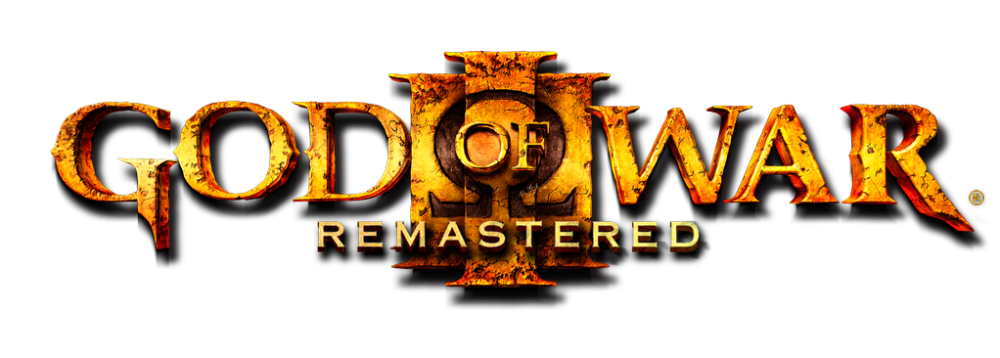
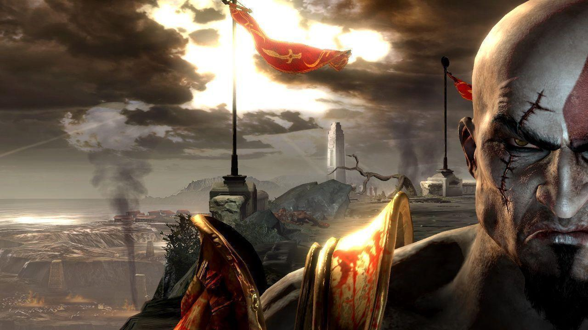

God Of War III PC Launcher
Windows, Linux ve Steam Deck üzerinde God of War III Remastered deneyimini kusursuzlaştırmak için tasarlanmış; otomatik donanım optimizasyonu, akıllı yama yönetimi ve gelişmiş kontrolcü desteğine sahip modern başlatıcı.
Neden Bu Başlatıcı?
God of War III'ü modern donanımlarda karmaşık ayarlarla uğraşmadan en yüksek performansla oynamanız için geliştirildi.
Otomatik Donanım Optimizasyonu
Sisteminizin GPU ve donanım yeteneklerini tarar; gow3.ini ve gow3-deck.ini yapılandırma dosyalarını en ideal performans için otomatik olarak üretir.
Linux & Steam Deck & Windows
Platform fark etmeksizin çalışır. Linux üzerinde 01.00 ve 01.02, Windows üzerinde 01.02 sürümleriyle tam uyumluluk sunar. Steam Deck el konsolu için optimize edilmiştir.
Gelişmiş Kontrolcü Desteği
Sağ analog çubuğu düzeltmeleri, gamepad tuş atamaları ve arayüzdeki özel buton şekilleriyle konsol konforunda oynanış sağlar.
Akıllı Konum & Yama Tespiti
Oyunun kurulu olduğu dizini otomatik tespit eder. Güncellemeleri ve yamaları tek tıkla uygulayarak kurulum karmaşasını ortadan kaldırır.
Anlık Hata Günlükleri (Log)
Olası bir çökme veya problem durumunda, launcher içerisindeki log görüntüleyici sayesinde log dosyalarına anında erişip hata kaynağını tespit edebilirsiniz.
Otomatik Güncelleme Bildirimi
Yeni bir sürüm yayınlandığında başlatıcı bunu otomatik denetler ve her zaman en son optimizasyonlarla oynamanızı güvenceye alır.

3 Kolay Adımda Kurulum
Karmaşık rehberlere veya komut satırlarına gerek yok; dakikalar içinde savaşa başlayın.
Arşivi İndirin
Sayfanın üstündeki "Hemen İndir" butonuna tıklayarak son sürüm gow3-windows-linux.zip dosyasını bilgisayarınıza indirin.
Klasöre Çıkartın
İndirdiğiniz zip arşivini sağ tıklayıp istediğiniz bir dizine çıkartın. Tüm gerekli başlatıcı ve yapılandırma araçları klasörün içindedir.
Başlatıcıyı Çalıştırın
Windows için gow3-launcher-win.exe, Linux & Steam Deck için gow3-launcher dosyasını çalıştırın. Ayarlarınızı kaydedin ve oyunun keyfini çıkarın!
Son Sürüm Notları
Geliştirici tarafından yayınlanan en güncel iyileştirmeler ve hata onarımları.
Öne Çıkan Değişiklikler:
Windows tarafındaki güncelleme sorunu giderildi.
Sağ analog çubuğu eşleme (mapping) hatası düzeltildi.
Buton atamalarına özel simgeler ve şekiller eklendi.
Kullanıcı arayüzünde performans ve kararlılık geliştirmeleri yapıldı.
Windows desteği stabil hale getirildi ve tespit edilen hatalar giderildi.